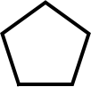
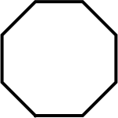
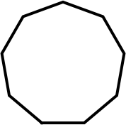
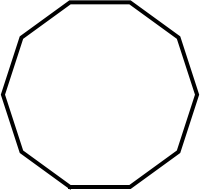
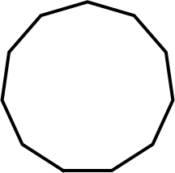
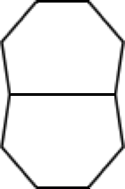
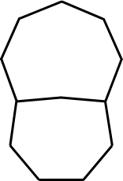
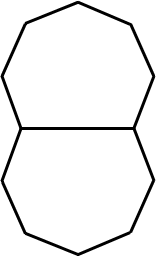
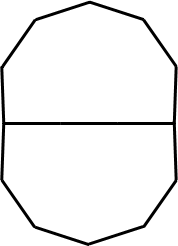
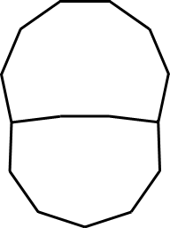

Given n unit length edges that cannot intersect except at endpoints, what configuration will maximize the product of the area of the polygons produced? The best known configurations (with area A) are shown.
         
3
A = √3/4
A = .43301+
Trivial.
4
A = 1
Trivial.
5
A = 5√(1+2/√5)/4
A = 1.72047+
Trivial.
6
A = 3√3/2
A = 2.59807+
Trivial.
7
A = 7cot(π/7)/4
A = 3.63391+
Trivial.
8
A = 2+2√2
A = 4.82842+
Trivial.
9
A = 9cot(π/9)/4
A = 6.18182+
Trivial.
10
A = 5√(5+2√5)/2
A = 7.69420+
Trivial.
11
A = 11cot(π/11)/4
A = 9.36563+
Trivial.
12
A = 11.42152+
Found by Erich Friedman
in July 2026.
13
A = 15.28945+
Found by Erich Friedman
in July 2026.
14
A = 20.46728+
Found by Erich Friedman
in July 2026.
15
A = 26.14660+
Found by Erich Friedman
in July 2026.
16
A = 33.40185+
Found by Erich Friedman
in July 2026.